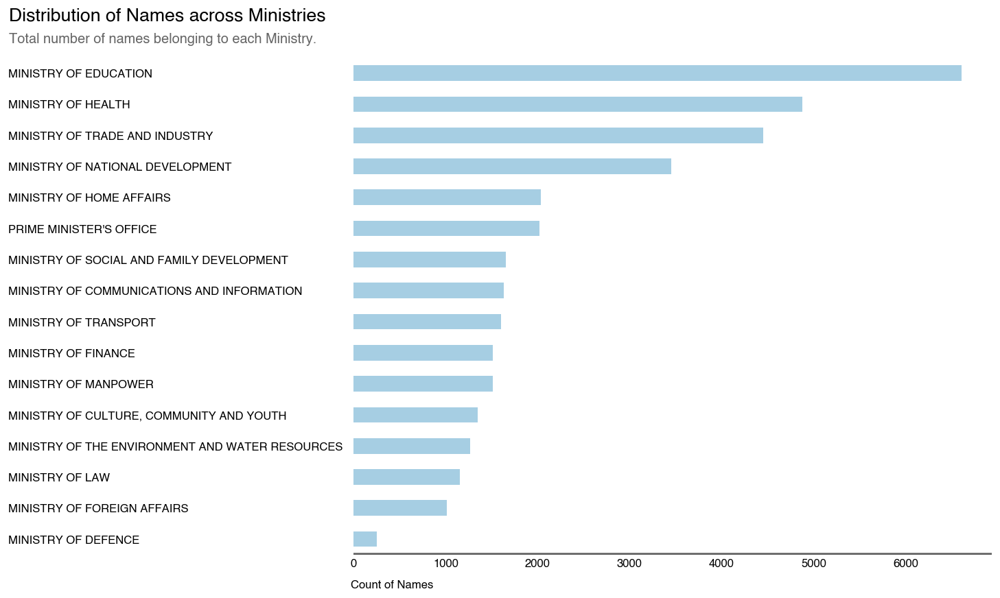
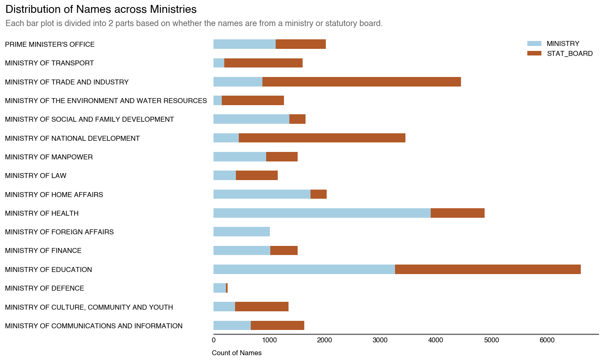
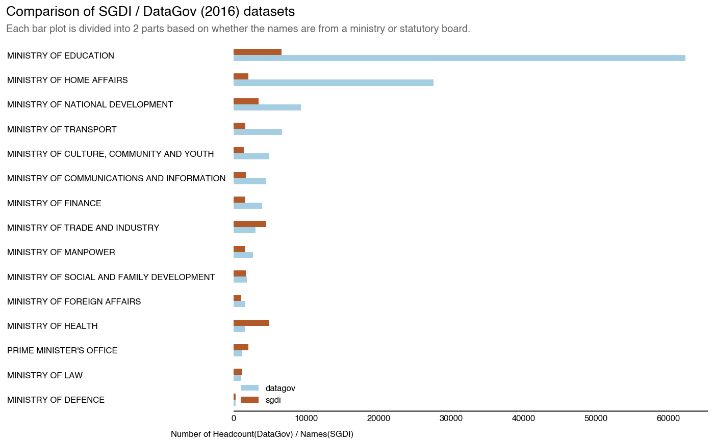

Table of Contents
Introduction
The Singapore Government DIrectory is an online directory that facilitates communication between members of the public and the civil service.
In short, it is a repository containing a truncated list of names containing appointment positions as well as ministerial departments.
Sample screenshot from sgdi with contact information blocked out.
Given that there are approximately 145,000 officers in the Public Service, it would be interesting to visualise the entirety of the Service and the distribution of employees using the SGDI as a proxy.
Granted, there are plenty of departments that do not have public facing arms (or are hidden under the official secrets act) as well as employees that do not need to be listed. It’s still worthwhile to generate conversations on the supposedly massive bureaucracy of the public service.
Getting Started
First, we start every project by looking at how we can acquire the data.
As mentioned above, we probably will have to get the data from the SGDI itself through some recursive web crawling. As web crawling on this scale is probably not recommended and may be in violation of the Computer Misuse Act, I’ll only touch upon the key outcomes and not elaborate on the how. BUT, an illustration of SGDI, or rather the structure of the government is as follows:
The structure of the SGDI
While the SGDI may be governed by restrictive policies, the data we will be using to compare against comes from [data.gov](‘https://data.gov.sg'). We can do a simply requests loop using Python to extract the necessary data.
For completeness, here is a sample code on how to retrieve data from data.gov:
import requests
uri = 'https://data.gov.sg'
resource_start = '/api/action/datastore_search'
payload = {
'resource_id' : 'cbcc128f-081d-4a03-8970-9bac1be13a5d' #lookup this id from data.gov
}
r = requests.get(uri + resource_start, params=payload).json()
records = []
while len(r['result']['records']) != 0:
records.extend(r['result']['records'])
r = requests.get(uri + r['result']['_links']['next']).json()Basically, this loop does the pagination needed to extract the data we need.
The Dataset
After crawling SGDI, we have a total of 36391 names across the various stat boards/ministries. We then do some basic data munging to remove the duplicates and clean up the dataset.
Some Insights
After doing so, we start to produce some visualizations using matplotlib to look at how our names are distributed.
SGDI Data
Distribution of the names in SGDI Dataset by Ministry

Distribution of the names in SGDI Dataset by Ministry / Statboard

Comparison of SGDI vs Official Data.gov Data
To see how far/near our SGDI dataset is to actual numbers, we compare it against the data.gov 2016 dataset.
Distribution of the names in SGDI Dataset by Ministry / Statboard

Now, we can see that there are definitely large gaps between the numbers on the SGDI and the ground truth (Data.gov). However, does this mean that the information is useless?
Not necessarily. The SGDI dataset will typically capture government employees with either a public facing function or in a position of visibility. It can serve as a credentialling tool for employees to verify their identity to literally anyone that requires it.
As such, operations-based roles such as front-line medical staff, teachers and military/civil personnel aren’t really expected to be on it but will contribute to the official headcount numbers.
Those in sensitive areas such as the Home Affairs and Defence Ministry are also unlikely to be on it for matters of national security.
In the next series of posts, I will be looking at representing the entire SGDI structure in a graph-based network diagram, trying to sieve out the complexity of our government. Furthermore, as we have the names of our public servants, I will attempt to use machine learning methods to label both the ethnicity and gender of the individuals to better understand how our departments are staffed.
Stay tuned!